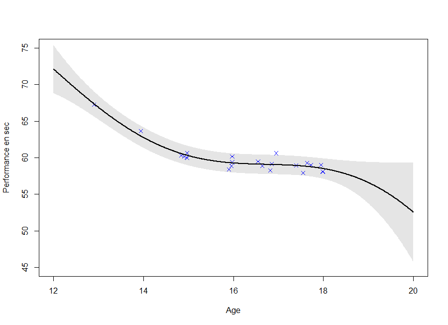

Apprentissage multi-tâches de données fonctionnelles :
Applications à la détection pour le sport de haut niveau
Arthur LEROY (MAP5 - Université de Paris)
Servane GEY (MAP5) - Jean-Francois TOUSSAINT (IRMES)
Pierre LATOUCHE (MAP5) - Benjamin GUEDJ (INRIA)
GTE MAP5 (version distanciation sociale) - 24/04/2019
Context
Traditional talent identification:
\(\rightarrow\) Best young athlete + coach intuition
G. Boccia et al. (2017) :
\(\simeq\) 60% of 16 years old elite athletes do not maintain their level of performance
Philip E. Kearney & Philip R. Hayes (2018) :
\(\simeq\) only 10% of senior top 20 were also top 20 before 13 years
Data
Performances from FF of Swimming members since 2002:
- Irregular time series
- Different number \(N_i\) of observations between individuals
- Different observational timestamps \(t_i^k\)
- \(N_i\) \(\simeq x \times10^1\)

Data
Performances from FF of Swimming members since 2002:
- Irregular time series
- Different number \(N_i\) of observations between individuals
- Different observational timestamps \(t_i^k\)
- \(N_i\) \(\simeq x \times10^1\) | \(N\) \(= \sum\limits_{i=1}^{M}\) \(N_i\) \(\simeq x \times 10^5\)

Data
Performances from FF of Swimming members since 2002:
- Irregular time series
- Different number \(N_i\) of observations between individuals
- Different observational timestamps \(t_i^k\)
- \(N_i\) \(\simeq x \times10^1\) | \(N\) \(= \sum\limits_{i=1}^{M}\) \(N_i\) \(\simeq x \times 10^5\)

Curves clustering
Functional data \(\simeq\) coefficients \(\alpha_k\) of B-splines functions:
\[y_i(t) = \sum\limits_{k=1}^{K}{\alpha_k B_k(t)}\]
Clustering: Algo FunHDDC (gaussian mixture + EM)
Bouveyron & Jacques - 2011
Using the multidimensional version : curve + derivative
\(\rightarrow\) Information about performance level and trend of improvement
Curve clustering
Leroy et al. - 2018
- Different patterns of progression
- Consistent groups for sport experts

Curve clustering
Leroy et al. - 2018
- Different patterns of progression
- Consistent groups for sport experts

New objectives
- Prediction of the future values of the progression curve
\(\rightarrow\) Functional regression
- Quantification of prediction uncertainty
\(\rightarrow\) Probabilistic framework

Gaussian process regression
Bishop - 2006 | Rasmussen & Williams - 2006
GPR : a kernel method to estimate \(f\) when:
\[y = f(x) +\epsilon\]
\(\rightarrow\) No restrictions on \(f\) but a prior probability:
\[f \sim \mathcal{GP}(0,C(\cdot,\cdot))\]
An example of exponential kernel for the covariance function: \[cov(f(x),f(x'))= C(x,x') = \alpha exp(- \dfrac{1}{2\theta^2} |x - x'|^2)\] Kernel definition \(\Rightarrow\) prefered properties on \(f\)
Prediction
\(\textbf{y}_{N+1} = (y_1,...,y_{N+1})\) has the following prior density: \[\textbf{y}_{N+1} \sim \mathcal{N}(0, C_{N+1}), \ C_{N+1} = \begin{pmatrix} C_N & k_{N+1} \\ k_{N+1}^T & c_{N+1} \end{pmatrix}\]
When the joint density is gaussian, so does the conditionnal dentisty:
\[y_{N+1}|\textbf{y}_{N}, \textbf{x}_{N+1} \sim \mathcal{N}(k^T \color{red}{C_N^{-1}}\textbf{y}_{N}, c_{N+1}- k_{N+1}^T \color{red}{C_N^{-1}} k_{N+1})\]
- Prediction: \(\hat{y}_{N+1} = \mathbb{E}[y_{N+1}|\textbf{y}_{N}, \textbf{x}_{N+1}]\)
- Uncertainty: CI with \(\mathbb{V}[y_{N+1}|\textbf{y}_{N}, \textbf{x}_{N+1}]\)
Visualization of GPR

Key points:
- Define a covariance function with desirable properties
- Non parametric method giving probabilistic predictions
- Complexity \(O(\color{red}{N^3})\) (inversion of a \(\color{red}{N} \times \color{red}{N}\) matrix)
GP estimation from data
Estimating a GP on each individuals (\(O(\color{green}{N_i^3})\)):
GP estimation from data
Estimating a GP on each individuals (\(O(\color{green}{N_i^3})\)):

GP estimation from data
Estimating a GP on each individuals (\(O(\color{green}{N_i^3})\)):
GP estimation from data
Estimating a GP on each individuals (\(O(\color{green}{N_i^3})\)):

GP estimation from data
Estimating a GP on each individuals (\(O(\color{green}{N_i^3})\)):

Reaching a coherent modeling
Estimating a GP on each individuals (\(O(\color{green}{N_i^3})\)):
- Uncertainty: Ok
- Coherence: Improvement required

\(\rightarrow\) Using the shared information between individuals (GPR-ME)
The GPFR model
Shi & Wang - 2008 | Shi & Choi - 2011
\[y_i(t) = \mu_0(t) + f_i(t) + \epsilon_i\] with:
- \(\mu_0(t) = \sum\limits_{k =1}^{K} \alpha_k \mathcal{B}_k(t)\) with \((\mathcal{B}_k)_k\) a spline basis
- \(f_i(\cdot) \sim \mathcal{GP}(0, \Sigma_{\theta_i}(\cdot,\cdot)), \ f_i \perp \!\!\! \perp\)
- \(\epsilon_i \sim \mathcal{N}(0, \sigma^2), \ \epsilon_i \perp \!\!\! \perp\)
GPFDA R package
Limits:
- No uncertainty about \(\mu_0\)
- Does not allow irregular time series
An extension to GPFR
\[y_i(t) = \mu_0(t) + f_i(t) + \epsilon_i\] with:
- \(\mu_0(\cdot) \sim \mathcal{GP}(m_0, K_{\theta_0}(\cdot,\cdot))\)
- \(f_i(\cdot) \sim \mathcal{GP}(0, \Sigma_{\theta_i}(\cdot,\cdot)), \ f_i \perp \!\!\! \perp\)
- \(\epsilon_i \sim \mathcal{N}(0, \sigma_i^2), \ \epsilon_i \perp \!\!\! \perp\)
It follows that:
\[y_i(\cdot) \vert \mu_0 \sim \mathcal{GP}(\mu_0(\cdot), \Sigma_{\theta_i}(\cdot,\cdot) + \sigma^2), \ y_i \vert \mu_0 \perp \!\!\! \perp\]
\(\rightarrow\) Shared information through \(\mu_0\) and its uncertainty
\(\rightarrow\) Unified non parametric probabilistic framework
\(\rightarrow\) Effective even for irregular time series
Notations
\(\textbf{y} = (y_1^1,\dots,y_i^k,\dots,y_M^{N_M})^T\)
\(\textbf{t} = (t_1^1,\dots,t_i^k,\dots,t_M^{N_M})^T\)
\(\Theta = \{ \theta_0, (\theta_i)_i, \sigma_i^2 \}\)
\(\Sigma\): covariance matrix from the process \(f_i\) evaluated on \(\textbf{t}\)
\(\Sigma = \left[ \Sigma_{\theta_i}(t_i^k, t_j^l)_{(i,j), (j,l)} \right]\)
\(\Psi = \Sigma + \sigma_i^2 Id_N\)
Bayes’ law is the new Bible
Reminder of its simple definition:
\[ \mathbb{P}(T \vert D) = \dfrac{\mathbb{P}(D \vert T) \mathbb{P}(T)}{\mathbb{P}(D)} \] Powerful implication when it comes to learning from data:
- \(\mathbb{P}(T)\), probability of your theory, what you think a priori
- \(\mathbb{P}(D \vert T)\), probability of data if theory is true, likelihood
- \(\mathbb{P}(D)\), probability that your data occur, norm. constant
Bayes’ law tells you how and what you should learn on theory T according to data D:
\(\rightarrow \mathbb{P}(T \vert D)\), what you should think a posteriori Computational burden, among solutions: empirical Bayes
Learning HP and \(\mu_0\) : an EM algorithm
Step E: Computing the posterior (knowing \(\Theta\))
\[
\begin{align}
p(\mu_0(\textbf{t}) \vert \textbf{t}, \textbf{y}, \Theta)
&\propto p(\textbf{y} \vert \textbf{t}, \mu_0(\textbf{t}), \Theta) \ p(\mu_0(\textbf{t}) \vert \textbf{t}, \Theta) \\
&\propto \mathcal{N}( \mu_0(\textbf{t}), \Psi) \ \mathcal{N}(m_0, K) \\
&= [Insert \ here \ some \ PhD \ student \ ideas] \\
&= \mathcal{N}( \hat{\mu}_0(\textbf{t}), \hat{K})
\end{align}
\]
Step M: Estimating \(\Theta\) (knowing \(p(\mu_0)\))
\[\hat{\Theta} = \underset{\Theta}{\arg\max} \ \mathbb{E}_{\mu_0} [ \log \ p(\textbf{y}, \mu_0(\textbf{t}) \vert \textbf{t}, \Theta ) \ \vert \Theta]\]
Initialize hyperparameters
while(sufficient condition of convergence){
Iterate alternatively steps E and M}
A picture is worth 1000 words
\(\mathbb{E} \left[ \mu_0(\textbf{t}) \vert Data \right] \pm CI_{0.95}\)
Iteration counter : 0
A picture is worth 1000 words
\(\mathbb{E} \left[ \mu_0(\textbf{t}) \vert Data \right] \pm CI_{0.95}\)

Iteration counter : 1
A picture is worth 1000 words
\(\mathbb{E} \left[ \mu_0(\textbf{t}) \vert Data \right] \pm CI_{0.95}\)

Iteration counter : 2
A picture is worth 1000 words
\(\mathbb{E} \left[ \mu_0(\textbf{t}) \vert Data \right] \pm CI_{0.95}\)
Iteration counter : 4
A picture is worth 1000 words
\(\mathbb{E} \left[ \mu_0(\textbf{t}) \vert Data \right] \pm CI_{0.95}\)

Iteration counter : 5
A picture is worth 1000 words
\(\mathbb{E} \left[ \mu_0(\textbf{t}) \vert Data \right] \pm CI_{0.95}\)

Iteration counter : 6 \(\rightarrow\) break and return
Coupure pub
Petit jeu concours pour savoir qui sont ceux qui suivent et ceux qui scrollent sur Facebook :
L’orateur a oublié de sortir un graph et a donc sauté une itération.
Saurez vous retrouver laquelle ?
\(\rightarrow\) Une bière pour le vainqueur. Un jour. Peut être.
Making predictions
\[ \forall i, \ \ y_i(t) = \mu_0(t) + f_i(t) + \epsilon_i \] Suppose that, after the learning step, you observe data from a new individual \(\star\). Multitask learning consists in improving performance by sharing information across individuals.
Also recall that if \(p(y_*(\textbf{t}), y_*(t^{new})) = \mathcal{N}( \begin{bmatrix} m_*^{\textbf{t}} \\ m_*^{new} \\ \end{bmatrix}, \begin{pmatrix} \Psi_*^{\textbf{t},\textbf{t}} & \Psi_*^{\textbf{t},new} \\ \Psi_*^{new,\textbf{t}} & \Psi_*^{new,new} \end{pmatrix})\)
GP prediction’s formula gives:
\[\begin{align}
p(y_*(t^{new}) \vert y_*(\textbf{t}))
&=\mathcal{N} \big( m_*^{new} + \Psi_*^{new,\textbf{t}} {\Psi_*^{\textbf{t},\textbf{t}}}^{-1} (y_*(\textbf{t}) - m_*^{\textbf{t}}); \\
& \hspace{1.2cm} \Psi_*^{new,new} - \Psi_*^{new,\textbf{t}} {\Psi_*^{\textbf{t},\textbf{t}}}^{-1} \Psi_*^{\textbf{t},new} \big)
\end{align}\]
Making predictions
Multitask regression : conditioning on observations Incertitude on the mean process : integrate over \(\mu_0\)
\[\begin{align}
p(y_* \vert \textbf{y})
&= \int p(y_*, \mu_0 \vert \textbf{y}) \ d \mu_0\\
&\underbrace{=}_{Bayes \heartsuit} \int p(y_* \vert \textbf{y}, \mu_0) p(\mu_0 \vert \textbf{y}) \ d \mu_0\\
&\underbrace{=}_{(y_i \vert \mu_0)_i \perp \!\!\! \perp} \int p(y_* \vert \mu_0) p(\mu_0 \vert \textbf{y}) \ d \mu_0 \\
&= \mathcal{N}( \hat{\mu}_0, \hat{K} + \Psi)
\end{align}\]
A gif is worth \(10^9\) words

- Same data, same hyperparameters from learning
- Standard GP (left) | Our Multitask GP (right)
A gif is worth \(10^9\) words

We talked about clustering, did we ?
Assumption : 1 underlying mean process might be strong
\(\rightarrow\) Mixture model of multitask GP:
\[\forall i , \forall k , \ \ y_i(t) \vert (Z_{ik} = 1) = \mu_k(t) + f_i(t) + \epsilon_i\] with:
- \(Z_{i} \sim \mathcal{M}(1, \pi)\)
- \(\mu_k(\cdot) \sim \mathcal{GP}(m_k, K_{\theta_0}(\cdot,\cdot))\)
- \(f_i(\cdot) \sim \mathcal{GP}(0, \Sigma_{\theta_i}(\cdot,\cdot)), \ f_i \perp \!\!\! \perp\)
- \(\epsilon_i \sim \mathcal{N}(0, \sigma_i^2), \ \epsilon_i \perp \!\!\! \perp\)
It follows that:
\[y_i(\cdot) \vert (\mu_k)_k, \pi \sim \sum\limits_{k=1}^K{\pi_k \ \mathcal{GP}(\mu_k(\cdot), \Psi_i)}, \ y_i \vert (\mu_k)_k, \pi \perp \!\!\! \perp\]
Learning \((\mu_k)_k, (Z_i)_i\) and HPs : VEM
Posterior dependencies \((\mu_k)_k\) and \((Z_i)_i\) \(\rightarrow\) variational EM
Step E:
Approximation assumption: \(r(\mu, Z) = r(\mu)p(Z)\)
True likelihood becomes : \(\mathcal{L}(model) = \mathcal{L}(r(\mu, Z)) + KL \big( r(\mu, Z) \vert \vert p(\mu, Z \vert \textbf{y})\big)\)
Step M:
\(\mathcal{L}(r(\mu, Z))\) provides a lower bound for LL maximization
Then buisiness as usual
\(\rightarrow\) Each step is proved to increase likelihood. Repeat until convergence.
Did I mention that I like gifs ?
Why probabilistic prediction is better ?
Making a prediction is \(\mathbb{P}(\)saying something wrong\() \simeq 1\).
A probabilistic prediction tells you how much:

Perspectives
Improve and release the package
Enable association with sparse GP approximations
Integrate to the app and launch tests with FFN
Maybe multivariate functional regression
If you have another idea, let’s work on that together
Write down a thesis. Someday.
References
Pattern Recognition and Machine Learning - Bishop - 2006
Gaussian processes for machine learning - Rasmussen & Williams - 2006
Curve prediction and clustering with mixtures of Gaussian process […] - Shi & Wang - 2008
Gaussian Process Regression Analysis for Functional Data - Shi & Choi - 2011
Nonparametric Bayesian Mixed-effect Model: a Sparse […] - Wang & Khardon - 2012
Career Performance Trajectories in Track and Field Jumping Events […] - Boccia & al - 2017
Efficient Bayesian hierarchical functional data analysis […] - Yang & al - 2017
Excelling at youth level in competitive track and field […] - Kearney & Hayes - 2018
Functional Data Analysis in Sport Science: Example of Swimmers’ […] - Leroy & al. - 2018